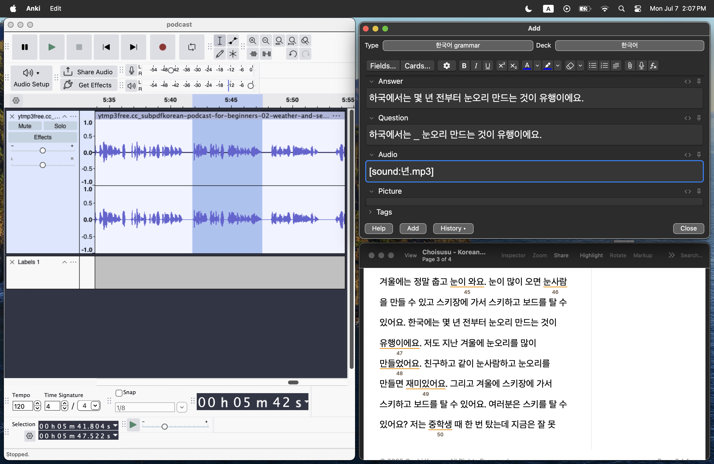

July 2025
29 - A simple tracker
27 - How to remember words
The word to remember: 가르치. In other words, God and lychee. Totally pure luck that someone made this image already.
7 - A snapshot of the setup

Been pretty slow. I was writing down the lines as I went and then going back to make the flashcards, but it was getting kind of annoying to do so right now I am just listening to the audio and looking at the transcript to see if I got the words right.
Since there isn’t necessarily an outline of vocabulary and grammar to study, I have been pretty selective with the snippets. Only if I know I won’t remember it or if I want to train my ears more to recognize that word/grammar, will I add it to Anki.
4 - Celebrating America’s birthday with a korean log update
My previous approach was very flashcard-heavy. I was using the pre-made deck from the creator of the Korean Fluency blog (plus my own modifications) and it worked pretty well. All I had to do with study the cards of the day and I would be “making progress”. Well, my long term memory is 💩 so I found that I was reviewing the same cards over and over again, especially after long breaks. I could not recall cards that were supposedly “mastered”.
The new approach is to focus on listening comprehension (with no subtitles) and picking up the vocabulary alongside. I am listening to ChoiSusu’s Beginner podcast episodes and they are great. The pace is slow, sentences complex but only with 1-2 new grammar points in each, key vocabulary words repeated often. Since I already have the basic grammar down, so far the podcast hasn’t been hard to understand.
I am still making flashcards. First I listen, shadow and write down the line in my notebook (kind of tedious so looking to change this). Then I go on Audacity and extract the lines/phrases that I think are good for reviewing.
It’s a slower approach in that I won’t be learning new vocab frequently. Also my brain shuts down after 3-4 pages of the dialogue so I can’t really “lock in”. But I definitely feel my listening is getting better and it’s more productive in the long run since I am hitting listening, vocabulary, grammar and repetition at the same time.
June 2025
28 - MASSIVE UPDATEEEEE
Guess wat? I actually didn’t do anything I said I would lolol - I took a long vacation and did Anki for a few days, then just dropped everything eventually.
I’m back now.
May 2025
16 - You know what, let’s just go all in
I’m changing my mind. Let’s just do full immersion. I was thinking…at what point of my life am I going to have the most free time than now? Probably never. So why don’t I give it a shot. It’s not going to be 100% Korean of course, but I’m going to dedicate a considerable amount of time (like ~4-5 hours a day) studying using the activities I listed in previous entries and adding some listening practice with Cloze Master.
16 - Not much of an update, more so a personal note to self
Right now studying is pretty chill and straight forward. Do my Anki decks, get some grammar examples from the textbook, read webtoons (which I haven’t got back into yet…) but I’m sparing my listening and writing a lot. One of the reasons is because those two are the hardest and I know it will take a considerable amount of energy from me. The only way is just to push, so I’ll leave that after my 30 days of Anki.
Otherwise it’s all slowly but surely…
14 - Looking for ways to optimize…
I’m working on Anki now and it really seems like I cannot remember certain words even after seeing them 10+ times. It’s always a matter of not knowing one of the characters that make up the word (e.g. 지_다 -> 지우다), or similar words with similar spelling (e.g. 뜨겁다 vs 따뜻하다). I think one factor would be inconsistency in studying. I’m going to study for one month straight everyday (one sitting everyday) and see if that fixes things. If not, then I’ll probably start employing some of the templates that Fluent Forever suggested, maybe make specific hard-to-remember words analog, or some other technique. I also think I should start studying in reverse order. So far, I’ve only been studying with the picture and example sentence in the front. What if I try to “generate” the picture?
8 - Resources
Throughout my year of “dabbling” in Korean, I found several resources and sites. So this is for the future when I know more, or for reference:
- https://todaikorean.com/home?hl=en
- https://kids.donga.com/
- https://kid.chosun.com/
- https://retrolearnskorean.blogspot.com/
- https://unyounglearnskorean.tumblr.com/post/100930792028/childrens-books-in-korean
- https://vk.com/wall338750403_148
- http://www.epik.go.kr/index.do
- https://ridibooks.com/category/free-books/100
- http://xn–hu1b40go5ck8x.com/
- Intermediate Anthology
- Once Upon A Time In Korea
- https://learning-korean.com/DL/TOPIK-I-1671.pdf
- TOPIK practice test
- [Beginner phrases, fill in the blank](https://drive.google.com/drive/folders/1qp8Lw6KfuZKKuB1KcoKjldajmUF01k9N
- )
8 - Time to lock in
Done with finals (and university). Cut the max reviews to 20 cards but 50 per deck is too intense getting back into it.
In the last update, I said I want to start integrating grammar and more input. I am reading a book called Fluent Forever which provides some exercises and general language learning pedadogical info and I’m going to try them out.
- Grammar flash cards - make flashcards from the Korean Beginner textbook
- Read the webtoon - like half a chapter a day, add new words and flashcards to Anki
- Continue doing Anki since it’s the “fastest” way to learn new Korean
I’m going to stick with input for now.
April 2025
29 - End of the semester Brief update
Took a long break from Anki, but getting back into it now (I have 50+ reviews stacked up).
The way that I set up my Anki cards is to display the picture first, along with a cloze for the word underneath. The problem is finding a good image. Sometimes I have a certain image in mind that I want to put it (Fluent Forever’s personal connection vocab memorization hack) but other times, I search up the word. Google Images is decent for most words, I also found Freepik alright too.
Also now that the semester is pretty much over, I have a lot a lot a lot of incentive to really dig deep into this Korean learning journey so I’m looking to start integrating grammar and daily input.
There are many philosophies out there about language learning. Because I have pretty high social anxiety (getting better though!), I prefer not to talk so much especially if I know like 1% of the language right now. So the camp of only input, no output fits me well. It’s definitely a bit hard to find enjoyable comprehensbile input. I also find that my attention span is zero so I can’t even watch a video longer than a TikTok. I’m going on a ~20 day “detox” from social media (YouTube included) to fix my bad habits, so I will use this time to focus mainly on grammar. There’s the Korean Grammar for Beginners book that is really good; I’ll read through some chapters and make cards for them. That way when I start doing the input, I will have some foundations to build upon.
I’m pretty excited to get the momentum going.
25 - Some more deep diving in to IPA
Read a bit more about Korean phonology on Wikipedia and found some interesting facts that would help with the pronunicaiton. Note I am not using the correct linguistic terms for this.
- For the Hangul syllable blocks that are comprised of two consonant clusters at the bottom final section e.g. 앉, there are actually phonetic rules for what it would sound like.
- For clusters with a ㅎ on the right side, it is sometimes “carried” over to the next syllable. This is called elided consonants?
- There have been changes to Korean phonology through the decades, notably that 애(ɛ) and 에(e) not have no phonetic difference.
Also because I have no sense of responsbility for my academics, I spent a good chunk of time fixing up my Anki cards. They’re cleaner now, and I found a neat add-on that resizes the pictures when I paste them. So no more ugly cards! Now if I would just study them…
23 - Fluent Forever and IPA!
Spent basically the entire day learning how to decipher IPA symbols. I think I got the basics down for consonants and vowels in terms of how the charts work. It’s pretty awesome how linguists were able to compile all of this, but holy cow did they go ham. Just the amount of terminology and possible combinations and categories is mind-boggling.
- Consonants: voiced, place (what passive/active articulators are touching what), manner (how is the sound made)
- Vowels: height, rounded, front/back
Found a lot of resources, the ones that helped me the most:
{kind=link}
Still need to practice (with actual words) but now that I understand how they actually work physically, it’s a lot easier to make the sound instead of imitating by ear. Which I think is a big win.
Next is to repeat it a bunch of times until it’s ingrained in my memory. I also found an Anki deck of minimal pairs so that’ll help my listening more to. But it is in practice (aka the real world) that will truly test me…
A bit of an aside…my very first introduction to Hangul was this comic. It is great for visual mnemonics but eventually I ended equating the English pronunication of the letters to Hangul. It also doesn’t explain the difference between regular (ㄱ), aspirated (ㅋ) and tense consonants (ㄲ) that well, which I think is the hardest part about Korean phonetics for English speakers. So for newcomers, definitely use it in the beginning but once you got it down, switch over to IPA.
Background
I’ve been learning on and off now for about a year. Did some Billy Go videos - learned Hangul, basic phrases, vocab and grammar. Then stopped to take a more independent approach with Anki + ChatGPT. Then stopped completely. Then did some periodic readings of TTMIK’s Korean reading books. In my most recent “consistent” block, I have been:
- doing 3-5 new words on Anki
- currently separated words by verbs and nouns
- cards have informal conjugation (요), sample sentences paired with pictures, pronunciation
- reading through a webtoon
- copying the sentences and asking ChatGPT to explain the grammar
- watching videos sometimes
I’ve started reading Fluent Forever by Gabriel Wyner and it has some great tips about how to make the most of your language learning. Some things I will start doing once I have more time:
- revamp my Anki cards
- reduce the number of sentences
- make sure I have some personal connection to it
- fix the layout
- establish a good schedule for making Anki cards
- IPA for Korean
- Establish schedule to consume Korean content
- Schedule for studying the grammar